线上成果整合五幕动线、贯穿音频、可交互场地模型、预算风险表及完整视觉物料。页面阅读宽度随第二幕通道尺度变化，用于模拟空间节奏。
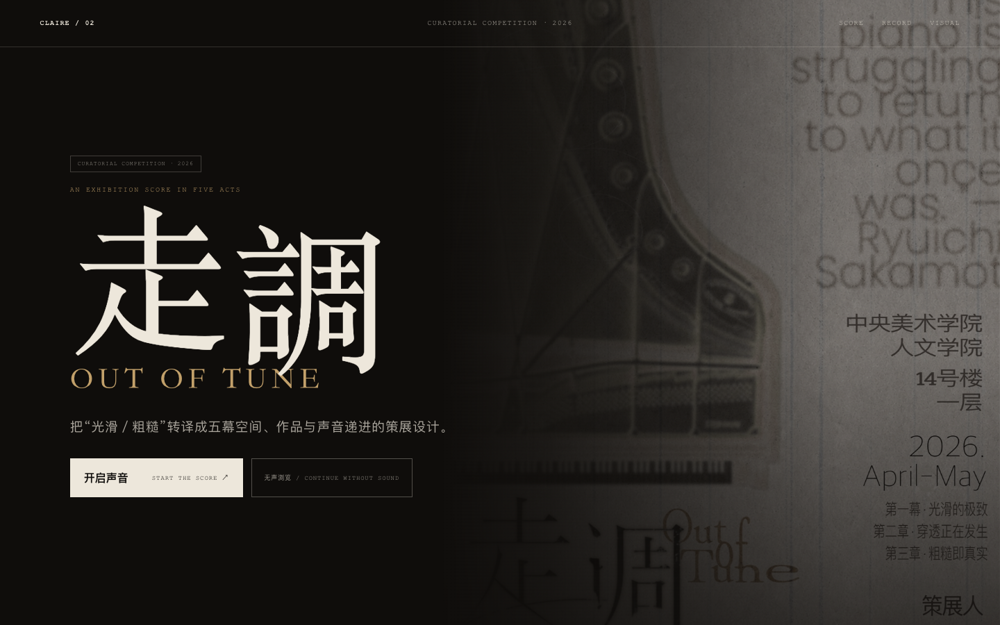
点击查看网页 ↗项目将“光滑／粗糙”的抽象主题转化为层高、通道宽度和材料重量三项空间变量，并以“标准—偏移—断裂—余响”组织五幕体验。
策展目标包括：
场地是央美 14 号楼一层。同口进出，内部单向推进。
| 幕 | 空间条件 | 作用 | |
|---|---|---|---|
| 00 | 调音前 BASELINE | 入口 · 节拍器与标准钢琴音 | 建立参照 |
| 01 | 光滑的极致 ORDER | 层高 3.7m · 长桌与规整挂法 | 可读、被许诺的秩序 |
| 02 | 穿透正在发生 DRIFT | 通道 180cm → 100cm · 水波纹镜膜 | 身体减速、错位、反射 |
| 03 | 粗糙即真实 RUPTURE | 层高 6.9m · 材料与体量为主角 | 高潮 |
| 04 | 仍然发声 RESONANCE | 黑室 · 改造钢琴与 CRT | 减少与停留 |
终章采用黑室、改造钢琴与 CRT，降低信息密度并延长停留时间。
第三幕将《碎片》调整为王亮《修理》（水泥、钢筋，200×200×200cm），以材料重量和 200cm 体量强化 6.9m 高空间中的视觉重心。
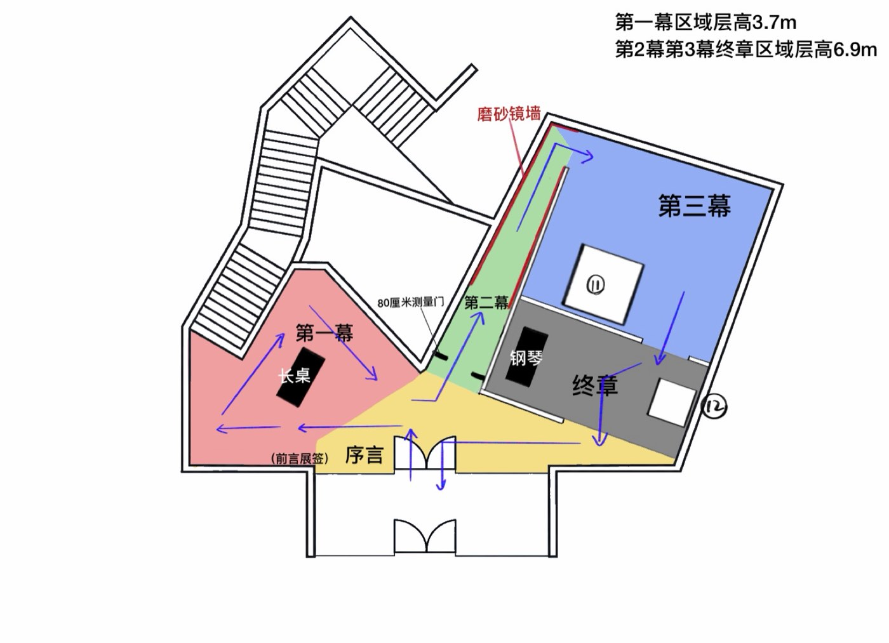
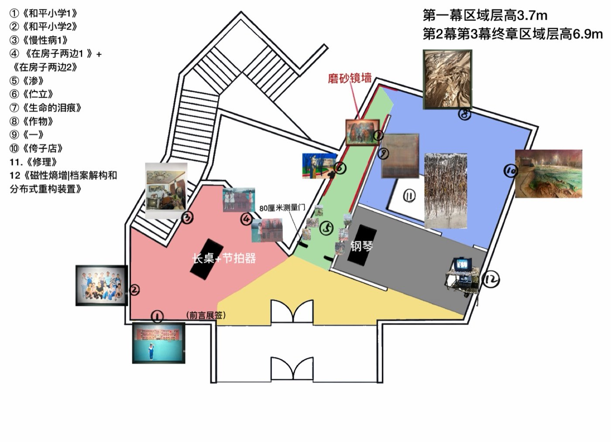
方案同步完成预算拆分、施工条件、作品替代机制与安全预案。
| 项目 | 金额 |
|---|---|
| 空间结构与设备 | ¥2,800 |
| 展签与导览物料 | ¥1,000 |
| 借展 · 转运 · 制作 | ¥1,500 |
| 应急储备金 | ¥200 |
| 合计 | ¥5,500 |
动线逆行与拥堵（预约限流 ≤6 人／场）· 第二幕通道安全（镜墙固定、转角无突出件）· 作品借展变动（各章节预备同功能替代）· 转运与安装（预核入口、转弯与承重，钢琴六步拆分）· 用电与布线（防绊处理、机械机构加防护）· 黑室声场（厚帘视听双重隔离、局部吸音）
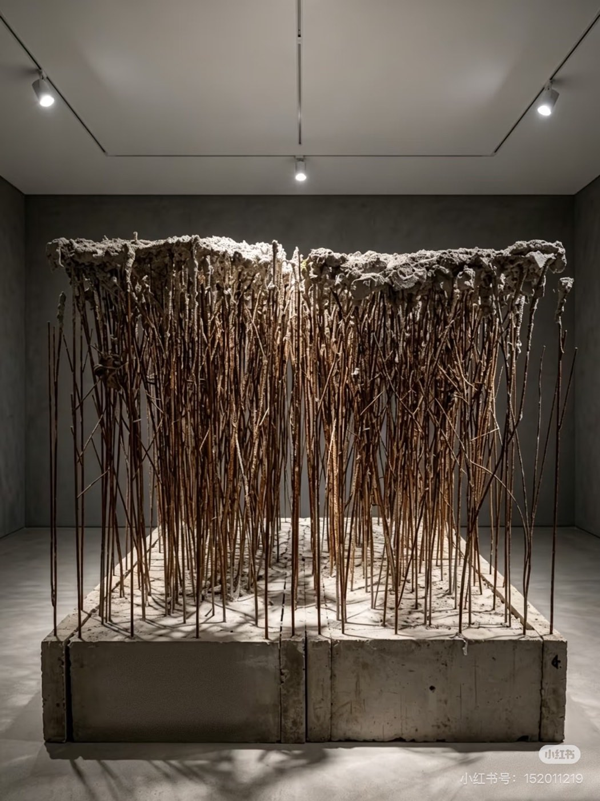
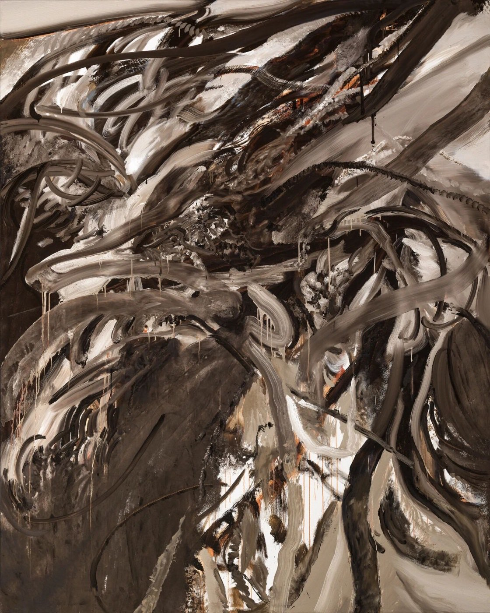
海报、导览册与衍生品采用纸张纹理、钢琴机械结构、“走／调”错位字形和逐幕加深的色阶，保持不同媒介的视觉一致性。
信息层级包括章节展签 5 组、作品展签 13 组、节点展签 6 组及 A5 折页导览册。长篇理论内容集中于导览册，墙面信息保持简洁。
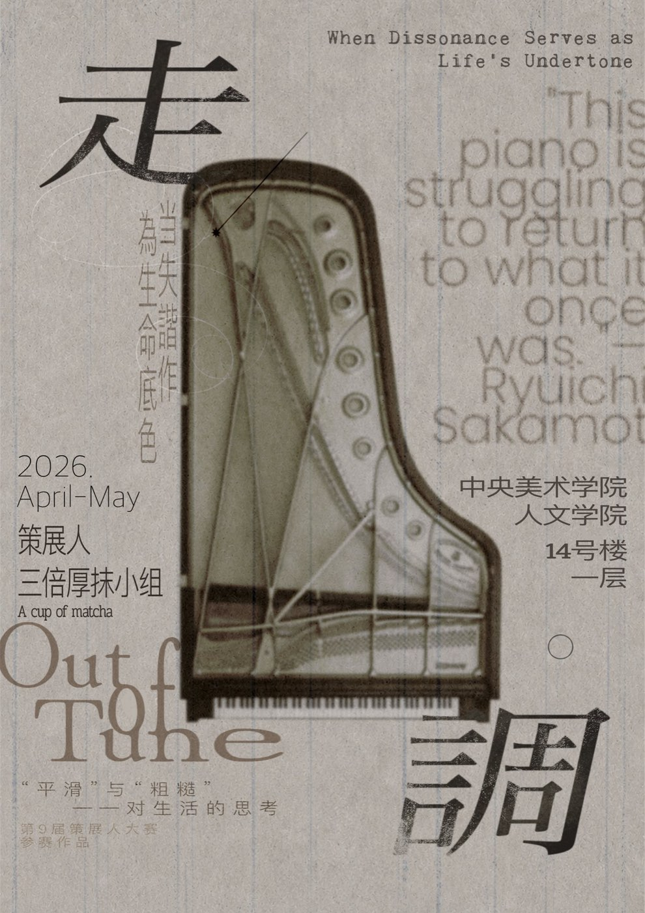
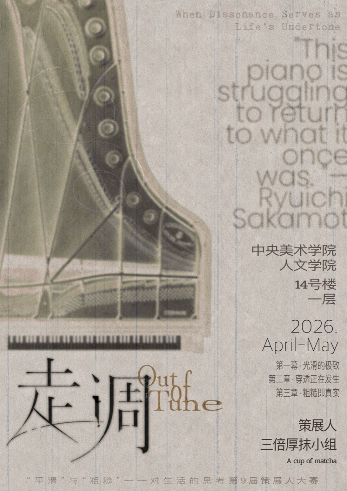
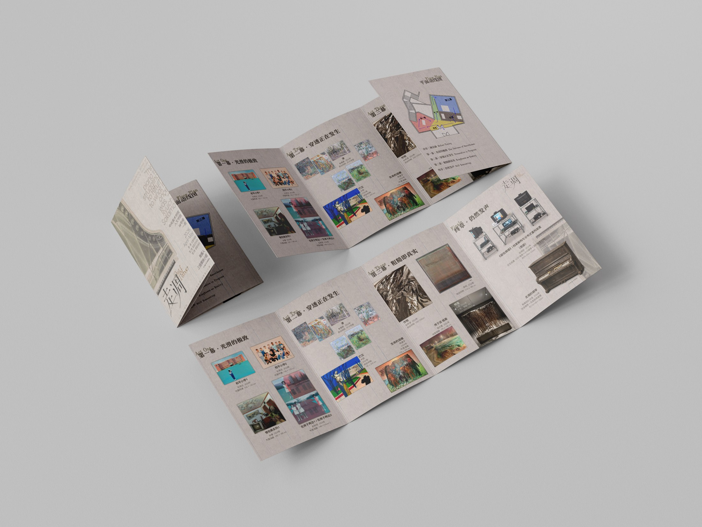
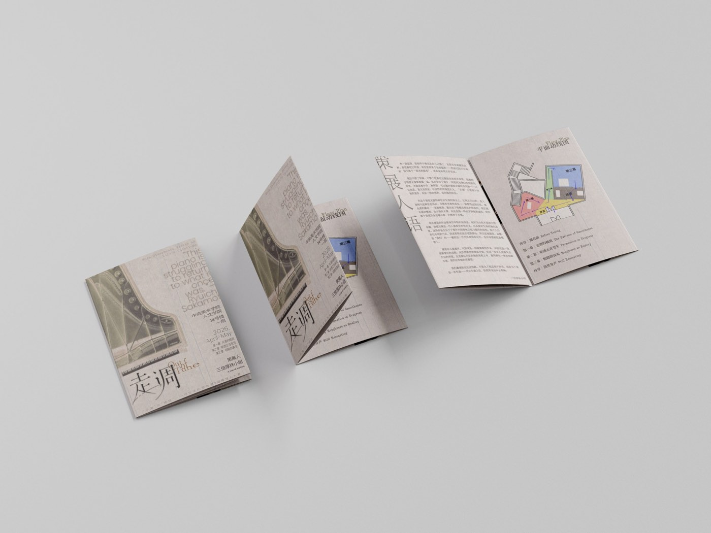
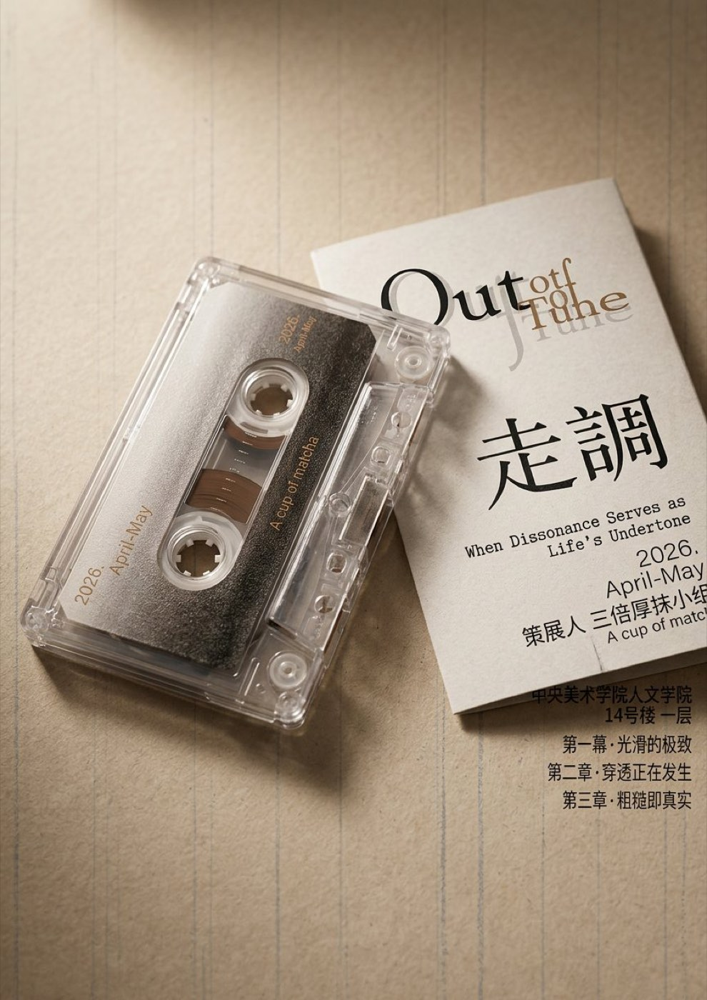
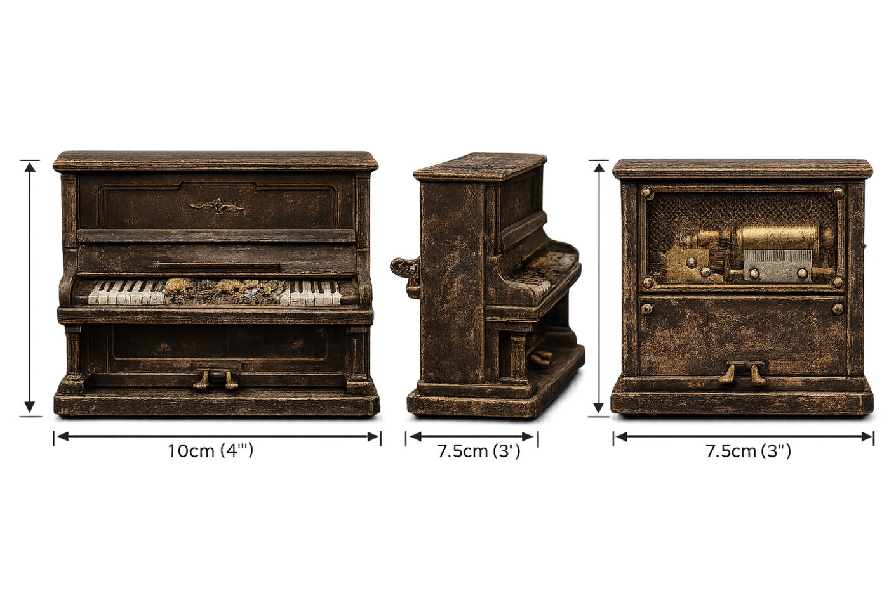